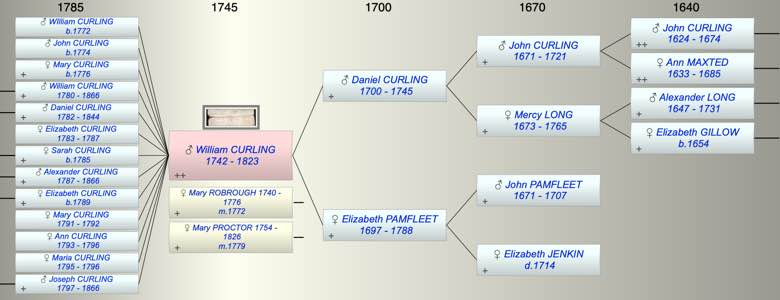

| [Index] |
| William CURLING (1742 - 1823) |
| fishmonger |
|  |

|
| b. 1742 at St Laurence |
| m. (1) 20 Feb 1772 Mary ROBROUGH (1740 - 1776) at St Savior, Southwark |
| m. (2) 04 Aug 1779 Mary PROCTOR (1754 - 1826) at Moreton in Marsh, Glos |
| d. 1823 aged 81 |
| Parents: |
| Daniel CURLING (1700 - 1745) |
| Elizabeth PAMFLEET (1697 - 1788) |
| Siblings (5): |
| Elizabeth CURLING (1724 - 1724) |
| Mercy CURLING (1727 - 1727) |
| Daniel CURLING (1730 - 1818) |
| John CURLING (1732 - 1804) |
| Alexander CURLING (1739 - 1789) |
| Events in William CURLING (1742 - 1823)'s life | |||||
| Date | Age | Event | Place | Notes | Src |
| 1742 | William CURLING was born | St Laurence | Note 1 | ||
| 06 Mar 1745 | 3 | Death of father Daniel CURLING (aged 45) | St Laurence | Note 2 | |
| 20 Feb 1772 | 30 | Married Mary ROBROUGH (aged 32) | St Savior, Southwark | Note 3 | |
| 22 Dec 1772 | 30 | Birth of son WIlliam CURLING | City of London | Note 4 | |
| 05 Apr 1774 | 32 | Birth of son John CURLING | London | Note 5 | |
| 1776 | 34 | Death of wife Mary ROBROUGH (aged 36) | Southwark | Note 6 | |
| 14 Sep 1776 | 34 | Birth of daughter Mary CURLING | City of London | Note 7 | |
| 04 Aug 1779 | 37 | Married Mary PROCTOR (aged 25) | Moreton in Marsh, Glos | Note 8 | |
| 01 Oct 1780 | 38 | Birth of son William CURLING | City of London | Note 9 | |
| 11 Mar 1782 | 40 | Birth of son Daniel CURLING | London | Note 10 | |
| 07 Sep 1783 | 41 | Birth of daughter Elizabeth CURLING | City of London | Note 11 | |
| 12 Jun 1785 | 43 | Birth of daughter Sarah CURLING | City of London | Note 12 | |
| 1787 | 45 | Death of daughter Elizabeth CURLING (aged 4) | City of London | Note 13 | |
| 13 Jul 1787 | 45 | Birth of son Alexander CURLING | City of London | Note 14 | |
| 31 Jan 1788 | 46 | Death of mother Elizabeth PAMFLEET (aged 91) | St Laurence | aged 90 ex MI | |
| 14 Jun 1789 | 47 | Birth of daughter Elizabeth CURLING | City of London | Note 15 | |
| 22 Jul 1791 | 49 | Birth of daughter Mary Ann CURLING | City of London | Note 16 | |
| 1792 | 50 | Death of daughter Mary Ann CURLING (aged 1) | City of London | Note 17 | |
| 13 Apr 1793 | 51 | Birth of daughter Ann CURLING | City of London | Note 18 | |
| 30 Nov 1795 | 53 | Birth of daughter Maria CURLING | City of London | Note 19 | |
| 1796 | 54 | Death of daughter Ann CURLING (aged 3) | City of London | Note 20 | |
| 1796 | 54 | Death of daughter Maria CURLING (aged 1) | City of London | Note 21 | |
| 26 Sep 1797 | 55 | Birth of son Joseph CURLING | City of London | Note 22 | |
| 1823 | 81 | William CURLING died | |||
| Personal Notes: |
|
Will PROB 11/1678 dated 1 February 1816 Codicil dated 19 March 1818 Codicil dated 28 August 1822 Will and Codicils proved London 22 December 1823 Executors named his son William Curling, his son-in-law Anthony Brown, and his brother-in-law Joseph Procter Beneficiaries were his wife Mary, his sons William, Alexander, Daniel and Joseph Curling, his daughters Mary (wife of Thomas Piper), Sarah (wife of Anthony Brown) and Elizabeth (wife of Joseph Fuller Carter).
In the Name of God, Amen I William Curling of Lower Thames Street in the City of London and of Chatham Place, Walworth in the County of Surrey, Fishmonger, being in good health and of sound and disposing mind memory and understanding, praised be God for the same, but considering the uncertainty of life do make and publish this my Last Will and Testament in manner and form following, that is to say: First and principally I commend my soul to Almighty God hoping to obtain everlasting life and happiness only through the merits and righteousness of my Lord and Saviour Jesus Christ, and as to such worldly estate and effects as it hath please God to bless me with, I dispose thereof as follows, that is to say: I will and direct that all such debts and sums of money as I shall justly owe or stand indebted to any person or persons at the time of my decease together with the expenses of my funeral and the charges of the probate of this my Will be in the first place fully paid and satisfied. I give and bequeath unto my dear wife Mary Curling all that my messuage or tenement situate and being in Chatham Place aforesaid wherein I now reside with the fore court garden and appurtenances thereunto belonging, to hold the same to her my said wife her executors administrators and assigns for and during all such term estate and interest as I shall have to come and unexpired therein at the time of my decease, subject to the rent and covenants reserved and contained in the lease by or under which I hold or at the time of my decease may hold the same. I give and bequeath unto my said dear wife all my household goods and furniture plate china linen glass liquors and books, except books of account, that shall be in or about my dwelling house situate and being in Chatham Place aforesaid or in or about any other house wherein I may reside at the time of my decease to and for her own use and benefit. And I give and bequeath unto her my said wife the sum of two hundred Pounds to be paid to her as soon as may be after my decease out of the money I may then have in my bankers hands if the same shall be sufficient for that purpose, and if not then out of the first monies belonging to my estate that shall come to the hands of my executors, the same being intended by me for her present use. I give and bequeath to my said dear wife for and during the term of her natural life the dividends and annual produce to arise and become due and payable in respect of the sum of three hundred Pounds per annum long annuities now standing in my name in the books of the Governor and Company of the Bank of England. And from and after her decease my will and meaning is and I do hereby direct that the said three hundred Pounds per annum long annuities shall fall into and become part of the residue of my estate and effects. I give and bequeath unto my said dear wife for and during the term of her natural life the interest and dividends to arise and grow due for and in respect of the sum of two thousand Pounds four Pounds per centum bank annuities being part of the four Pounds per centum bank annuities standing in my name in the books of the Governor and Company of the Bank of England. And from and after her decease my will and meaning is and I do hereby direct that the said two thousand Pounds four Pounds per centum bank annuities shall fall into and become part of the residue of my estate and effects. I give and bequeath all the stock in the Navy five Pounds per centum annuities which at the time of my decease shall be found standing in the joint names of myself and my said wife in the books of the Governor and Company of the Bank of England, unto her my said wife her executors administrators and assigns to and for her and their own absolute use and benefit. And I do hereby declare that the provision by me hereby made by my said wife is in full satisfaction of all thirds or any customary part she may claim or demand out of my estate as my widow, either by the common or statute law of England or by the custom of the City of London or otherwise howsoever. I give and bequeath unto my son William Curling and Alexander Curling all that my leasehold messuage or tenement with the appurtenances situate in Lower Thames Street aforesaid together with the several fixtures thereto belonging, to hold the same unto them my said sons and their respective executors administrators and assigns as tenants in common and not as joint tenants for and during all the term estate and interest which I shall have to come therein at the time of my decease, subject nevertheless to the rent and reservations by or under which I hold the same. And it is my wish and desire and I do most earnestly recommend that the trade or business of a Fishmonger now carried on by me in partnership with my said sons William and Alexander in Lower Thames Street aforesaid and on Fish Street Hill in the said City of London, may be carried on by and under the joint direction of my said sons William and Alexander for their joint and equal benefit and advantage, they my said sons paying for the proportion of the stock in trade which shall be belonging to me at the time of my decease to my executors at a fair valuation. I give and bequeath unto my son Daniel Curling my leasehold messuage or tenement situate and being in Cheapside in the said City of London wherein he now resides and which I purchased of the trustees of Thomas Harris, to hold the same with the appurtenances unto him my said son his executors administrators and assigns for and during all such term estate and interest as I shall have to come and unexpired therein at the time of my decease, subject nevertheless to the rent and reservations by or under which I hold the same. I give and bequeath unto my said executors the sum of four hundred Pounds of lawful money of Great Britain upon such and the same trusts as are hereinafter mentioned concerning the share of the residue of my estate and effects hereinafter given in trust for the benefit of my daughter Mary, the wife of Thomas Piper of Dorking in the County of Surrey, Esquire. And I give and bequeath unto my said executors the sum of four hundred Pounds of like lawful money upon such and the same trusts as are hereinafter mentioned concerning the share of the residue of my estate and effects hereinafter given in trust for the benefit of my daughter Sarah, the wife of Anthony Brown of Finsbury Place in the County of Middlesex, Gentleman. And I give and bequeath unto my said executors the sum of four hundred Pounds of like lawful money upon such and the same trusts as are hereinafter mentioned concerning the share of the residue of my estate and effects hereinafter given in trust for the benefit of my daughter Elizabeth, the wife of Joseph Fuller Carter of the Royal Exchange in the City of London, Stationer. I give and bequeath unto my son Joseph Curling the sum of one thousand five hundred Pounds of like lawful money and my will and meaning is and I do hereby direct that the said sum of one thousand five hundred Pounds shall within six calendar months next after my decease be laid out and invested by my executors hereinafter named in their own names in or upon some of the public stocks or funds of Great Britain and that the dividends interest and annual produce of the said stock of funds shall be paid applied and disposed of in the maintenance and clothing of my said son until he shall attain his age of twenty one years, and that upon my said son attaining the said age of twenty one years, they my said executors or the survivors or survivor of them or the executors or admors of such survivor shall transfer the stocks or funds so to be purchased with the said sum of one thousand five hundred Pounds unto him my said son to and for his own proper use and benefit. Provided always that in case my said son shall depart this life under the said age of twenty one years then and in such case my will and meaning is and I do hereby direct that the legacy hereby given to my said son shall fall into and become part of the residue of my estate and effects. I give and bequeath unto my executors hereinafter named the sum of twenty Pounds apiece as a compensation for the trouble they will have in the execution of the trusts of this my Will. I do hereby devise all such real estate or estates as now is or are vested in me by way of mortgage in fee unto and to the use of my executors hereinafter named their heirs and assigns, subject to such equity of redemption as shall affect the same at the time of my decease. And as to all the rest residue and remainder of my estate and effects whatsoever and wheresoever and of what nature or kind soever not before by me disposed of, I give and bequeath the same and every part thereof unto my executors hereinafter named their executors administrators and assigns upon the trusts and to and for the intents and purposes hereinafter mentioned expressed and declare of and concerning the same, that is to say upon trust that they my said trustees and executors or the survivors or survivor of them or the executors or administrators of such survivor do and shall as soon as conveniently may be after my decease convert into money all such part of my said residuary estate as shall not consist of money or stock in the public funds, and do and shall pay and transfer three full seventh parts or shares of my said residuary estate or of the produce thereof unto and equally between and amongst my said sons William Curling, Daniel Curling and Alexander Curling, share and share alike, and to lay out and invest so much of the remaining four full seventh parts or shares of my said residuary estate or of the produce thereof as shall not consist of stock in the public funds in some or one of the public funds in some or one of the Public funds of Great Britain and do and shall stand and be possessed of the said stocks or funds so to be purchased as aforesaid and also of such part of the said four full seventh parts or shares of my said residuary estate as shall consist of stock in the public funds in trust to assign transfer and make over one full fourth part or share thereof unto my said son Joseph Curling upon his attaining his said age of twenty one years and in the meantime to pay apply and dispose of the dividends interest and annual produce which shall arise or grow due from time to time from the presumptive share of my said son of and in the said stocks and funds or so much thereof as shall be necessary for that purpose in the maintenance and clothing of my said son, and to pay the interest dividends and annual produce of one other full fourth part or share of the said stocks or funds unto each of my three daughters that is to say Mary the wife of the said Thomas Piper, Sarah the wife of the said Anthony Brown, and Elizabeth the wife of the said Joseph Fuller Carter for and during their respective natural lives unto such person or persons as they my said daughters respectively shall by any note in writing appoint to receive the same to the end the same or any part thereof shall not be in anywise subject or liable to the debts control intermeddling or engagements of the present or any future husband of them my said daughters respectively. And for that purpose my will and meaning is and I do hereby direct that the receipt and receipts of my said daughters respectively and of such person or persons as they shall respectively appoint to receive the same, shall from time to time notwithstanding any coverture of my said daughters to be a good and effectual discharge and good and effectual discharges for all and every such dividends interest and produce or so much thereof as in such receipt or receipts shall be expressed or acknowledged to be received. And from and after the decease of any one or more of my said daughters respectively upon trust to pay the share of each such daughter so dying of and in the said dividends and annual produce to the husband of each such daughter if any shall be living at the time of her decease for and during the term of his natural life to and for his own use and benefit. And in case my said daughters shall respectively leave any child or children of their respective bodies lawfully begotten then upon trust from and after the decease of my said daughters respectively and of their respective husbands to transfer the share or shares of and in the said stocks or funds so given to or in trust for such of my said daughters respectively so dying unto and amongst the children of such of my said daughters respectively so dying if more than one in such shares or proportions and at such time or times and under and subject to such conditions and restrictions as my said daughters respectively in and by their respective Last Wills and Testaments in writing or any writing in the nature of a Will or any Codicil thereto to be signed and published by them respectively in the presence of and to be respectively attested by two or more credible witnesses shall notwithstanding any coverture and whether covert or sole and unmarried direct limit or appoint, and in default of such direction limitation or appointment upon trust to transfer the same unto and amongst such children of my said daughters respectively if more than one in equal shares and proportions and if but one to such only child at his her or their age or respective ages of twenty one years. And in the meantime and until such children or only child shall attain the said age upon trust to pay and apply the dividends interest or annual produce of each such child’s then presumptive share of and in the said stocks or funds in for and towards the maintenance and education of such children or of such only child as the case may be during their his or her minority. And in case any one or more of such children shall die under the said age then the part or share parts or shares of him her or them so dying shall go and be transferred to the survivors or survivor of them if more than one, equally between or amongst them share and share alike, but if but one survivor then to such only surviving child. And in case any one or more of my said daughters shall happen to die without leaving any child or children of her body lawfully begotten or leaving any such and all of them shall die under the said age of twenty one years, then upon trust to transfer the share or shares of and in the said stocks or funds so given to or in trust for such of my said daughters so dying unto such person or persons and in such shares and proportions manner and form as such of my said daughters so dying shall notwithstanding any coverture and whether covert or sole in and by her Last Will and Testament in writing or any writing in the nature of a Will or any Codicil thereto to be signed sealed and published in the presence of and to be attested by two or more credible witnesses direct or appoint. And in default of such direction or appointment in trust to pay assign transfer and assure the same unto the executors or administrators of such daughter so dying. Provided always and my will and meaning is and I do hereby direct that in case my said son Joseph shall happen to depart this life under the said age of twenty one years the share or shares of and in the residue of my estate and effects hereinbefore given to or in trust for him shall be in trust for my other children in such and the same manner in all respects as their original shares of and in the residue of my estate and effects is hereinbefore given to or in trust for them respectively, anything hereinbefore contained to the contrary thereof in anywise notwithstanding. And I do hereby nominate constitute and appoint my said son William Curling and my son-in-law the said Anthony Brown together with my brother-in-law Joseph Procter of Fleet Street in the said City of London, Furniture Printer, Executors of this my Will. Provided always and I do hereby declare my mind and will to be that my said executors and their respective executors and administrators shall not be answerable or accountable the one for the other or others of them or for the acts receipts payments neglects or defaults of the other or others of them, but each and every of them for his own acts receipts payments neglects and defaults only, nor shall they any or either of them be answerable for or liable to make good any more of my said monies or effects than they shall respectively actually receive by virtue of this my Will, nor for the insufficiency of any banker with whom the said trust monies or any part thereof shall or may be deposited for safe custody, and also that it shall and may be lawful to and for them my said executors and each and every of them and each and every of their executors and administrators from time to time to deduct retain to and reimburse themselves respectively out of any part of the aforesaid trust monies stocks funds or securities dividends interest or annual produce all such costs charges damages and expenses as they respectively shall pay suffer sustain be at or be put unto in or about the execution of the trusts of this my Will or in anywise relating thereto. Provided also and my will and meaning further is and I do hereby direct that it shall and may be lawful to and for my said trustees and executors and the survivors and survivor of them and the executors and administrators of such survivor and also to and for any future trustee or trustees to be nominated and appointed as hereinafter is mentioned, to alter and transpose any of the trust funds which shall be created under or by virtue of this my Will from time to time as to them shall seem meet and proper so as nevertheless the said substituted stocks funds and securities shall always be upon such and the same trusts as are in and by this my Will expressed with respect to those from which such stocks funds or securities shall be transposed, and also that if any one or more of the trustees in and by this my Will nominated and appointed or any future trustee or trustees of the said trust premises shall die or desire to be discharged from or refuse decline or become incapable to act in the trusts in them reposed before the same shall be fully executed and performed then and in such case and so often as the same shall happen it shall and may be lawful to and for the surviving or continuing trustee or trustees to nominate substitute and appoint any other person or persons to be a trustee or trustees in the place or stead of the trustee or trustees who shall so die or desire to be discharged from or refuse decline or become incapable to act in the aforesaid trusts, and that when and so often as any new trustee or trustees shall be so nominated and appointed as aforesaid all the trust monies stocks funds and securities or such part thereof as shall be then remaining upon or subject to the trusts aforesaid, shall thereupon with all convenient speed be transferred in such sort and manner and so as that the same may be legally and effectually vested in such surviving or continuing trustee or trustees if there be any and such new trustee or trustees jointly, but if there shall be no surviving or continuing trustee or trustees then in such new trustee or trustees only upon such and the same trusts and in such and the same manner to all intents and purposes as if he or they had been in and by this my Will nominated and appointed a trustee or trustees or as near thereto as circumstances will permit. And lastly hereby revoking and making void all former and other Wills by me at any time heretofore made I do declare this and this only to be and contain my Last Will and Testament. In witness whereof I the said William Curling the Testator have to the first eight sheets of this my Last Will and Testament contained in nine sheets of paper set my hand and to this ninth and last sheet thereof my hand and seal the first day of February in the year of our Lord one thousand eight hundred and sixteen. Signed: William Curling Signed sealed published and declared by the said William Curling the Testator as and for his Last Will and Testament in the presence of us who in his presence at his request and in the presence of each other have hereunto subscribed our names as witnesses to the due execution thereof: Benjamin Davis – Joshua Wilson – W. Grainger, Clerks to Mr. Anthony Brown, London Commercial Sale Rooms, Mincing Lane. I William Curling the Testator named in the foregoing Will do make publish and declare this present writing as and for a Codicil to my said Will. I do hereby revoke and make void the provision by me made by my said Will for my dear wife Mary Curling so far and so far only as respects the dividends and annual produce of the sum of three hundred Pounds per annum long annuities and the interest and dividends to arise and grow due for and in respect of the sum of two thousand Pounds four Pounds per centum bank annuities in my said Will respectively mentioned, and in lieu and stead of the provision hereby revoked I give and bequeath unto my said dear wife one annuity or clear yearly sum of three hundred and eighty Pounds for and during the term of her natural life, to be paid to her or her assigns by equal half yearly payments on the fifth day of April and the tenth day of October in every year, the first of such payments to begin and be made on such of the said days as shall next happen after my decease. And in order to provide for the payment of the said annuity my will and meaning is and I do hereby direct that the trustees and executors in my said Will named or the survivors or survivor of them or the executors or admors of such survivor do and shall invest such part of my estate and effects as they or he shall think proper in their or his own names or name in the purchase of such stock in some or one of the public funds of great Britain or do and shall invest so much of such stock as shall be found standing in my name at the time of my decease to be transferred into their or his own names or name and do and shall stand possessed of and interested in the stock to be so purchased or transferred as aforesaid upon trust to apply the dividends and income thereof in payment and discharge of the said annuity during the natural life of my said wife. And from and after her decease upon such trusts as are in my said Will mentioned concerning my residuary estate or the produce thereof. And I do hereby direct that the provisors in my said Will contained for the altering and transferring of the trust funds therein mentioned and for the nomination and appointment of new trustees in the event in my said Will mentioned shall be applicable to the stocks or funds to be so purchased or transferred as aforesaid in like manner as to any other part of the trust property which may be vested in my said trustees and executors or the survivors or survivor of them or the executors admors or assigns of such survivor under or by virtue of my said Will. And I do hereby confirm my said Will in all respects save so far as the same is hereby altered or revoked. In witness whereof I have hereunto set my hand and seal this nineteenth day of March in the year of our Lord one thousand eight hundred and eighteen. Signed: William Curling Signed sealed published and declared by the said William Curling the Testator as and for a Codicil to his Last Will and Testament in the presence of us who in his presence at his request and in the presence of each other have hereunto subscribed our names as witnesses to the due execution thereof: Benjamin Humphreys – George Marten – W. Grainger, Clerks to Mr. Brown, London Commercial Sale Room, Mincing Lane. I William Curling the Testator named in the foregoing Will do make publish and declare this present writing as and for a further Codicil to my said Will. Whereas my son Joseph Curling in my said Will named has since the date and execution of my said Will attained his age of twenty one years and I have given to him the sum of one thousand Pounds for his advancement in life, I do therefore hereby revoke the legacy of one thousand five hundred Pounds by my said Will given to my said son Joseph and all directions in my said Will contained in respect thereof and do hereby in lieu and stead of such legacy give and bequeath unto my said son Joseph the sum of five hundred Pounds of lawful money of Great Britain. And I do hereby revoke the trusts by my said Will created in respect of my residuary estate or the produce thereof so far and so far only as concerns the share thereof by my said Will intended and provided for my said son Joseph and do hereby direct that the trustees and executors in my said Will named do and shall stand and be possessed of such share of my said residuary estate or of the produce thereof upon trust to pay and transfer the same unto my said son Joseph. And I do hereby confirm my said Will in all respects save so far as such Will is hereby or by the first Codicil thereto, which I do hereby also confirm, in anywise altered or revoked. In witness whereof I have hereunto set my hand and seal the twenty eighth day of August one thousand eight hundred and twenty two. Signed: William Curling Signed sealed published and declared by the above named William Curling as and for a Codicil to his Last Will and Testament in the presence of us who in his presence at his request and in the presence of each other have hereunto subscribed our names as witnesses to the due execution thereof: George Marten – C.A. Brown – Clerks to Mr. Brown, London Commercial Sale Rooms, Mincing Lane. Proved at London with 2 Codicils 22nd December 1823 before the Worshipful John Haggard, Doctor of Laws and Surrogate by the oaths of William Curling the son, Anthony Brown, Esq., and Joseph Procter, the Executors to whom admon was granted, having been first sworn duly to administer. |
| Created on a Mac™ using iFamily for Mac™ on 8 Oct 2023 |